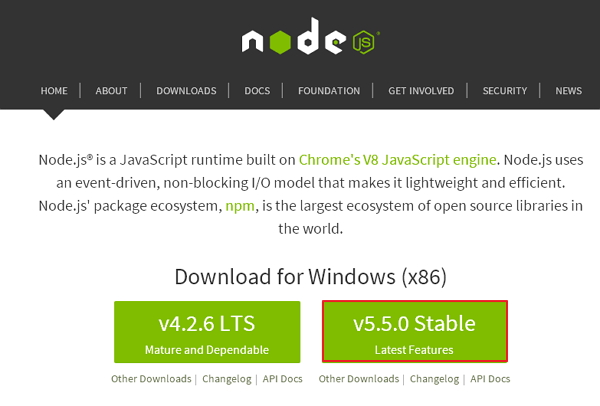
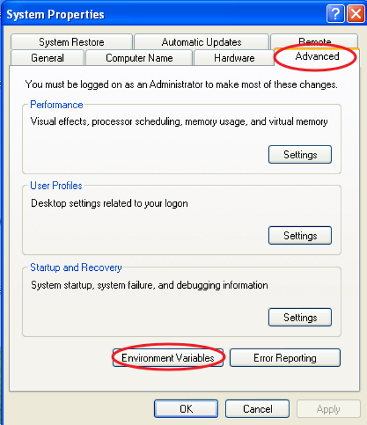
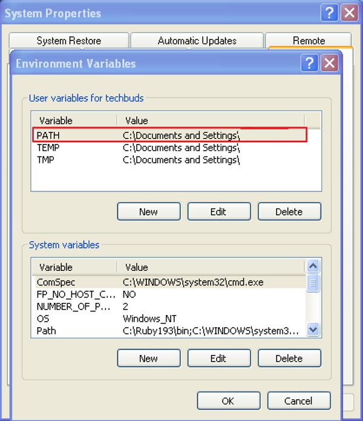
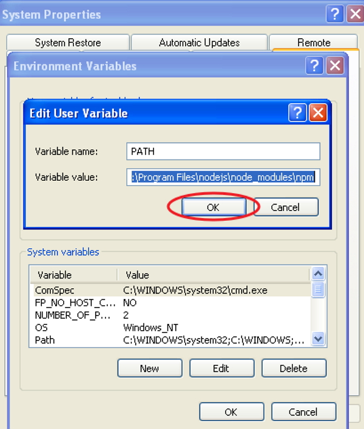
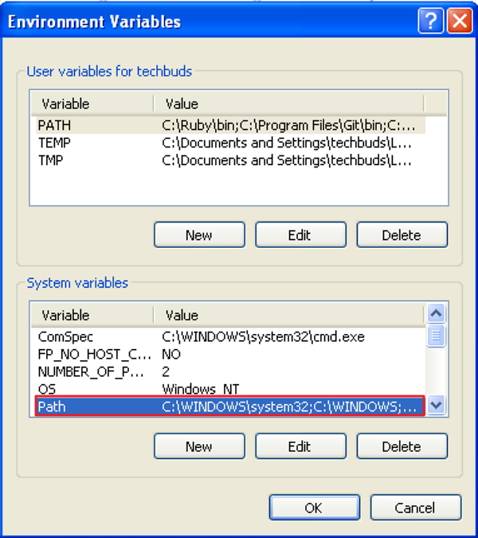
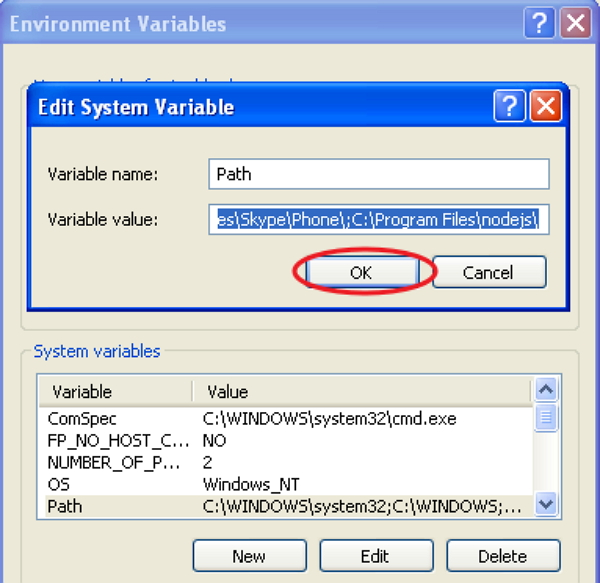
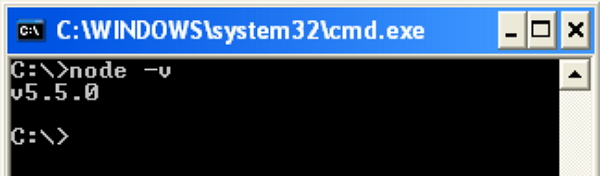
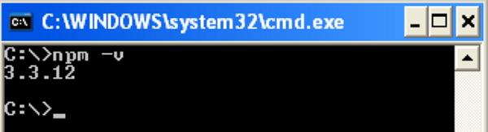
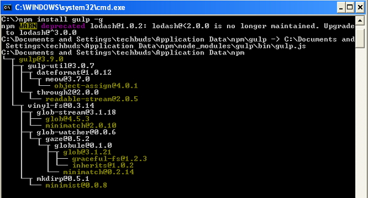
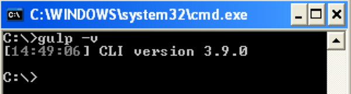

Gulp — Обзор
Gulp — это программа для выполнения задач, которая использует Node.js в качестве платформы. Gulp использует только код JavaScript и помогает запускать внешние задачи и крупномасштабные веб-приложения. Он создает системные автоматизированные задачи, такие как минимизация CSS и HTML, объединение библиотечных файлов и компиляция файлов SASS. Эти задачи можно запустить с помощью сценариев Shell или Bash в командной строке.
скачать Gulp- Это короче, проще и быстрее по сравнению с другими бегунами задач.
- Использует SASS и LESS в качестве CSS-препроцессора.
- Автоматически обновляет страницу после редактирования исходных файлов.
- Легко понять и создать Gulpfile.js, потому что он использует чистый код JavaScript для построения задачи.
Зачем использовать Gulp?
История
На всю документацию Gulp распространяется лицензия CC0. Изначально Gulp v1.0.0 был выпущен 15 января 2015 года, а текущая версия Gulp v3.9.0 .
Характеристики
- Обеспечивает минификацию и конкатенацию.
- Использует чистый код JavaScript.
- Преобразует LESS или SASS в компиляцию CSS.
- Управляет манипуляциями с файлами в памяти и повышает скорость с помощью платформы Node.js.
Преимущества
- Огромное преимущество в скорости перед любым другим бегущим заданием
- Легко кодировать и понимать.
- Легко тестировать веб-приложения.
- Плагины просты в использовании и предназначены для одновременного выполнения одного действия.
- Многократно выполняет повторяющиеся задачи, такие как минимизация таблиц стилей, сжатие изображений и т. Д.
Недостатки
- Больше количества зависимостей и является новичком по сравнению с Grunt.
- Используя плагины Gulp, вы не можете выполнять несколько задач.
- Конфигурация не так чиста, как Grunt.
Gulp — Установка
Эта статья содержит пошаговую процедуру установки Gulp.
Системные требования для Gulp
- Операционная система — кроссплатформенная
- Поддержка браузера — IE (Internet Explorer 8+), Firefox, Google Chrome, Safari, Opera
Установка Gulp
Шаг 1 — Нам нужен Node.js для запуска примеров Gulp. Вы увидите экран, как показано ниже —
скачать Node.js Загрузите последнюю версию Zip-файла.
Шаг 2 — Затем запустите программу установки, чтобы установить NodeJ на ваш компьютер.
Шаг 3 — Вам необходимо установить переменные среды.
- Щелкните правой кнопкой мыши на Мой компьютер.
- Выберите Свойства.
- Выберите вкладку «Дополнительно» и нажмите «Переменные среды». 
- В окне «Переменные среды» дважды щелкните ПУТЬ, как показано на следующем экране. 
- Вы получите окно редактирования пользовательской переменной, как показано на следующем снимке экрана. Добавьте путь к папке Node.js в поле Значение переменной как C: \ Program Files \ nodejs \ node_modules \ npm. Если путь уже задан для других файлов, вам необходимо поставить точку с запятой (;) и добавить путь Node.js, как показано на следующем снимке экрана. 
- В разделе «Системные переменные» дважды щелкните «Путь», как показано на следующем экране. 
- Вы получите окно редактирования системной переменной, как показано на следующем снимке экрана. Добавьте путь к папке Node.js в поле «Значение переменной» как C: \ Program Files \ nodejs \ и нажмите «ОК», как показано на следующем снимке экрана. 
В конце нажмите кнопку «ОК».
Системная переменная
Шаг 4 — Откройте командную строку в вашей системе и введите следующую команду. Он отобразит установленную версию Node.js.
node -v
Шаг 5 — В командной строке введите следующую команду, чтобы отобразить версию npm (менеджер пакетов Node.js), которая используется для установки модулей. Он отобразит установленную версию Node.js.
node -v
Шаг 6 — В командной строке введите следующую команду, чтобы установить Gulp. Добавление флага «-g» обеспечивает глобальную доступность Gulp для любого проекта.
npm install gulp -g
Шаг 7 — Чтобы убедиться, что Gulp был успешно установлен, введите следующую команду, чтобы отобразить версию Gulp.
gulp -v
Gulp — Основы
В этой главе вы познакомитесь с некоторыми основами, связанными с Gulp.
Что такое система сборки?
Система сборки называется набором задач (вместе именуемых «исполнителями задач»), которые автоматизируют повторяющуюся работу.
- Компиляция препроцесса CSS и JavaScript.
- Минификация файлов для уменьшения их размера.
- Объединение файлов в один.
- Запуск сервера для автоматической перезагрузки.
- Создание сборок развертывания для хранения полученных файлов в одном месте.
Ниже приведен список некоторых задач, которые можно выполнить с помощью системы сборки:
- Менеджеры пакетов
- Препроцессоры
- Задачи и инструменты сборки
В современном интерфейсном рабочем процессе система сборки работает с 3 компонентами:
Менеджеры пакетов
Он используется для автоматизации установки обновления, удаления необходимых зависимостей, чистых библиотек и пакетов, используемых в среде разработки. Примером для менеджеров пакетов являются bower и npm .
Препроцессоры
Препроцессоры очень полезны для эффективного современного рабочего процесса, добавляя оптимизированный синтаксис и дополнительные функции, которые компилируются в его родной язык.
- CSS — SASS, LESS и Stylus.
- JS — CoffeeScript, LiveScript, TypeScript и т. Д.
- HTML — Markdown, HAML, Slim, Jade и т. Д.
Некоторые из популярных препроцессоров —
Задачи Gulp
Исполнители задач автоматизируют задачи, такие как преобразование SASS в CSS, минимизируют файлы, оптимизируют изображения и многие другие задачи, используемые в рабочем процессе разработки. Gulp является одним из тех, кто выполняет задачи в современной рабочей среде, и работает на Node.
Настройка вашего проекта
-
Src
— Местоположение предварительно обработанных исходных файлов и папок HTML.
- Изображения — Содержит изображения без сжатия.
- Сценарии — содержит несколько предварительно обработанных файлов сценариев.
- Стили — содержит несколько предварительно обработанных файлов CSS.
-
Построить
— эта папка будет создана автоматически, которая содержит производственные файлы.
- Изображения — содержит сжатые изображения.
- Сценарии — один файл сценария, содержащий минимизированные коды.
- Стили — Отдельный файл CSS, содержащий минимизированные коды.
- gulpfile.js —— это файл конфигурации, который используется для определения наших задач.
Чтобы установить свой проект на своем компьютере, создайте папку под названием «работа», например. Рабочая папка содержит следующие подпапки и файлы —
Gulp — Разработка приложения
- Объявление необходимых зависимостей
- Создание задачи для зависимостей
- Выполнение задачи
- Смотря задачу
В этой главе мы рассмотрим основы разработки приложения, которые включают в себя следующее:
Декларация зависимостей
При установке плагинов для приложения необходимо указать зависимости для плагинов. Зависимости обрабатываются менеджером пакетов, таким как bower и npm.
Давайте возьмем один плагин под названием gulp-imagemin для определения зависимостей для него в файле конфигурации. Этот плагин может быть использован для сжатия файла изображения и может быть установлен с помощью следующей командной строки —
npm install gulp-imagemin --save-dev
Вы можете добавить зависимости в файл конфигурации, как показано в следующем коде.
var imagemin = require('gulp-imagemin');
Вышеупомянутая строка включает в себя плагин, и он включен как объект с именем imagemin .
Создание задачи для зависимостей
Задача позволяет использовать модульный подход для настройки Gulp. Нам нужно создать задачу для каждой зависимости, которую мы добавим, когда найдем и установим другие плагины. Задача Gulp будет иметь следующую структуру —
gulp.task('task-name', function() {
//do stuff here
});
Где ‘task-name’ — это имя строки, а ‘function ()’ выполняет вашу задачу. «Gulp.task» регистрирует функцию как задачу в имени и определяет зависимости от других задач.
Вы можете создать задачу для определенной выше зависимости, как показано в следующем коде.
gulp.task('imagemin', function() {
var img_src = 'src/images/**/*', img_dest = 'build/images';
gulp.src(img_src)
.pipe(changed(img_dest))
.pipe(imagemin())
.pipe(gulp.dest(img_dest));
});
Изображения находятся в src / images / ** / * , который сохраняется в img_srcobject. Он передается другой функции, созданной конструктором imagemin. Он сжимает изображения из папки src и копирует их в папку сборки, вызывая метод dest с аргументом, который представляет целевой каталог.
Выполнение задачи
Файл Gulp настроен и готов к выполнению. Используйте следующую команду в каталоге вашего проекта для запуска задачи:
gulp imagemin
Запустив задачу с помощью приведенной выше команды, вы увидите следующий результат в командной строке:
C:\work>gulp imagemin
[16:59:09] Using gulpfile C:\work\gulpfile.js
[16:59:09] Starting 'imagemin'...
[16:59:09] Finished 'imagemin' after 19 ms
[16:59:09] gulp-imagemin: Minified 2 images (saved 80.81 kB - 16.9%)